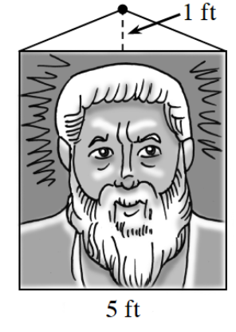

Complete the square to change the following equations to graphing form. Then sketch the graph of each equation.
\(f(x)=x^2+4x+6\)
\(x^2+6x+y^2-8y=0\)
Write the equation of a parabola that is the set of all points equidistant from the focus \((-3,1)\) and the directrix \(x=-1\).
Using the properties of exponents, solve for A in each of the following equations.
\(\frac{1}{25}\cdot 5^{(x+4)}=A\cdot 5^x\)
\(6\cdot 2^{(x-1)}=A\cdot 2^x\)
\(\frac{1}{3}\cdot 3^{(x-2)}=A\cdot 3^x\)
Solve the system below. Be sure to show all of your steps.
\(\begin{align*}\log_2(x)-\log_2(y)&=\log_3\left(\tfrac{1}{3}\right)\\2\log_4(x)-\log_4(y)&=\log_7(49)\end{align*}\)
Kiara is trying to solve \(\sin^2(3x)-\sin(3x)+0.24=0\). She originally makes the substitution \(u=3x\).
What new equation does she get?
She decides that she needs to make another substitution using the variable v. What will be a good substitution to make?
What is Kiara’s equation now?
Solve for v.
Solve for u.
Solve for x.
A large picture weighing 40 pounds is being suspended as shown in the diagram. How much tension is on one side of the cable?

Add the fractions and simplify: \(\frac{1}{\sec(x)+\tan(x)}+\frac{1}{\sec(x)-\tan(x)}\)
Complete the following operations with matrices.
\(\begin{bmatrix}-5\\-6\end{bmatrix}\begin{bmatrix}-1&8&7\end{bmatrix}\)
\(\begin{bmatrix}-10&-6\\3&4\end{bmatrix}^{-1}\)
Solve \(X\): \(\begin{bmatrix}-6&5&7\\-6&7&0\end{bmatrix}+2X=\begin{bmatrix}-8&-5&7\\3&-9&7\end{bmatrix}\)